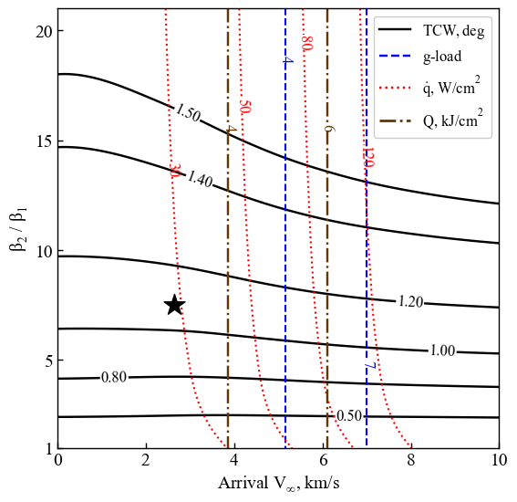

Section 3.2 - Mars SmallSat Aerocapture - Tradespace Exploration¶
We use aerocapture feasibility charts to explore the design trade space for aerocapture at Mars using drag modulation aerocapture.
[1]:
from AMAT.planet import Planet
from AMAT.vehicle import Vehicle
import numpy as np
from scipy import interpolate
import matplotlib.pyplot as plt
from matplotlib import rcParams
from matplotlib.patches import Polygon
import os
[2]:
# Create a planet object
planet=Planet("MARS")
planet.h_skip = 120000.0
# Load an nominal atmospheric profile with height, temp, pressure, density data
planet.loadAtmosphereModel('../../../atmdata/Mars/mars-gram-avg.dat', 0 , 1 ,2, 3)
vinf_kms_array = np.linspace( 0.0, 10.0, 11)
betaRatio_array = np.linspace( 1.0, 21.0 , 11)
[3]:
beta1 = 20.0
runID = 'mars-smallsat-dm'
[4]:
v0_kms_array = np.zeros(len(vinf_kms_array))
v0_kms_array[:] = np.sqrt(1.0*(vinf_kms_array[:]*1E3)**2.0 + 2*np.ones(len(vinf_kms_array))*planet.GM/(planet.RP+120.0*1.0E3))/1.0E3
overShootLimit_array = np.zeros((len(v0_kms_array),len(betaRatio_array)))
underShootLimit_array = np.zeros((len(v0_kms_array),len(betaRatio_array)))
exitflag_os_array = np.zeros((len(v0_kms_array),len(betaRatio_array)))
exitflag_us_array = np.zeros((len(v0_kms_array),len(betaRatio_array)))
TCW_array = np.zeros((len(v0_kms_array),len(betaRatio_array)))
[ ]:
for i in range(0,len(v0_kms_array)):
for j in range(0,len(betaRatio_array)):
vehicle=Vehicle('DMVehicle', 100.0, beta1, 0.0, 1.767, 0.0, 0.35, planet)
vehicle.setInitialState(120.0,0.0,0.0,v0_kms_array[i],0.0,-4.5,0.0,0.0)
vehicle.setSolverParams(1E-6)
vehicle.setDragModulationVehicleParams(beta1,betaRatio_array[j])
underShootLimit_array[i,j], exitflag_us_array[i,j] = vehicle.findUnderShootLimitD(2400.0, 2.0, -80.0,-4.0,1E-10,400.0)
overShootLimit_array[i,j] , exitflag_os_array[i,j] = vehicle.findOverShootLimitD (2400.0, 2.0, -80.0,-4.0,1E-10,400.0)
TCW_array[i,j] = overShootLimit_array[i,j] - underShootLimit_array[i,j]
print('VINF: '+str(vinf_kms_array[i])+' km/s, BETA RATIO: '+str(betaRatio_array[j])+' TCW: '+str(TCW_array[i,j])+' deg.')
np.savetxt('../../../data/acta-astronautica/smallsat-mission-concepts/mars/'+runID+'vinf_kms_array.txt',vinf_kms_array)
np.savetxt('../../../data/acta-astronautica/smallsat-mission-concepts/mars/'+runID+'v0_kms_array.txt',v0_kms_array)
np.savetxt('../../../data/acta-astronautica/smallsat-mission-concepts/mars/'+runID+'betaRatio_array.txt',betaRatio_array)
np.savetxt('../../../data/acta-astronautica/smallsat-mission-concepts/mars/'+runID+'overShootLimit_array.txt',overShootLimit_array)
np.savetxt('../../../data/acta-astronautica/smallsat-mission-concepts/mars/'+runID+'exitflag_os_array.txt',exitflag_os_array)
np.savetxt('../../../data/acta-astronautica/smallsat-mission-concepts/mars/'+runID+'underShootLimit_array.txt',underShootLimit_array)
np.savetxt('../../../data/acta-astronautica/smallsat-mission-concepts/mars/'+runID+'exitflag_us_array.txt',exitflag_us_array)
np.savetxt('../../../data/acta-astronautica/smallsat-mission-concepts/mars/'+runID+'TCW_array.txt',TCW_array)
[16]:
acc_net_g_max_array = np.zeros((len(v0_kms_array),len(betaRatio_array)))
stag_pres_atm_max_array = np.zeros((len(v0_kms_array),len(betaRatio_array)))
q_stag_total_max_array = np.zeros((len(v0_kms_array),len(betaRatio_array)))
heatload_max_array = np.zeros((len(v0_kms_array),len(betaRatio_array)))
underShootLimit_array = np.loadtxt('../../../data/acta-astronautica/smallsat-mission-concepts/mars/'+runID+'underShootLimit_array.txt')
overShootLimit_array = np.loadtxt('../../../data/acta-astronautica/smallsat-mission-concepts/mars/'+runID+'overShootLimit_array.txt')
for i in range(0,len(v0_kms_array)):
for j in range(0,len(betaRatio_array)):
vehicle=Vehicle('DMVehicle', 100.0, beta1, 0.0, 1.767, 0.0, 0.35, planet)
vehicle.setInitialState(120.0,0.0,0.0,v0_kms_array[i],0.0,overShootLimit_array[i,j],0.0,0.0)
vehicle.setSolverParams(1E-6)
vehicle.propogateEntry (2400.0, 2.0, 0.0)
# Extract and save variables to plot
t_min_os = vehicle.t_minc
h_km_os = vehicle.h_kmc
acc_net_g_os = vehicle.acc_net_g
q_stag_con_os = vehicle.q_stag_con
q_stag_rad_os = vehicle.q_stag_rad
rc_os = vehicle.rc
vc_os = vehicle.vc
stag_pres_atm_os = vehicle.computeStagPres(rc_os,vc_os)/(1.01325E5)
heatload_os = vehicle.heatload
vehicle=Vehicle('DMVehicle', 100.0, beta1, 0.0, 1.767, 0.0, 0.35, planet)
vehicle.setInitialState(120.0,0.0,0.0,v0_kms_array[i],0.0,underShootLimit_array[i,j],0.0,0.0)
vehicle.setSolverParams( 1E-6)
vehicle.propogateEntry (2400.0, 2.0, 0.0)
# Extract and save variable to plot
t_min_us = vehicle.t_minc
h_km_us = vehicle.h_kmc
acc_net_g_us = vehicle.acc_net_g
q_stag_con_us = vehicle.q_stag_con
q_stag_rad_us = vehicle.q_stag_rad
rc_us = vehicle.rc
vc_us = vehicle.vc
stag_pres_atm_us = vehicle.computeStagPres(rc_us,vc_us)/(1.01325E5)
heatload_us = vehicle.heatload
q_stag_total_os = q_stag_con_os + q_stag_rad_os
q_stag_total_us = q_stag_con_us + q_stag_rad_us
acc_net_g_max_array[i,j] = max(max(acc_net_g_os),max(acc_net_g_os))
stag_pres_atm_max_array[i,j] = max(max(stag_pres_atm_os),max(stag_pres_atm_os))
q_stag_total_max_array[i,j] = max(max(q_stag_total_os),max(q_stag_total_us))
heatload_max_array[i,j] = max(max(heatload_os),max(heatload_os))
print("V_infty: "+str(vinf_kms_array[i])+" km/s"+", BR: "+str(betaRatio_array[j])+" G_MAX: "+str(acc_net_g_max_array[i,j])+" QDOT_MAX: "+str(q_stag_total_max_array[i,j])+" J_MAX: "+str(heatload_max_array[i,j])+" STAG. PRES: "+str(stag_pres_atm_max_array[i,j]))
np.savetxt('../../../data/acta-astronautica/smallsat-mission-concepts/mars/'+runID+'acc_net_g_max_array.txt',acc_net_g_max_array)
np.savetxt('../../../data/acta-astronautica/smallsat-mission-concepts/mars/'+runID+'stag_pres_atm_max_array.txt',stag_pres_atm_max_array)
np.savetxt('../../../data/acta-astronautica/smallsat-mission-concepts/mars/'+runID+'q_stag_total_max_array.txt',q_stag_total_max_array)
np.savetxt('../../../data/acta-astronautica/smallsat-mission-concepts/mars/'+runID+'heatload_max_array.txt',heatload_max_array)
V_infty: 0.0 km/s, BR: 1.0 G_MAX: 0.8802169883233952 QDOT_MAX: 12.299433180911738 J_MAX: 2452.610893056963 STAG. PRES: 0.001708753559306077
V_infty: 0.0 km/s, BR: 3.0 G_MAX: 0.8802169883233952 QDOT_MAX: 15.798017276304611 J_MAX: 2452.610893056963 STAG. PRES: 0.001708753559306077
V_infty: 0.0 km/s, BR: 5.0 G_MAX: 0.8802169883233952 QDOT_MAX: 17.258172599537417 J_MAX: 2452.610893056963 STAG. PRES: 0.001708753559306077
V_infty: 0.0 km/s, BR: 7.0 G_MAX: 0.8802169883233952 QDOT_MAX: 18.099831481865703 J_MAX: 2452.610893056963 STAG. PRES: 0.001708753559306077
V_infty: 0.0 km/s, BR: 9.0 G_MAX: 0.8802169883233952 QDOT_MAX: 18.702861979243437 J_MAX: 2452.610893056963 STAG. PRES: 0.001708753559306077
V_infty: 0.0 km/s, BR: 11.0 G_MAX: 0.8802169883233952 QDOT_MAX: 19.157507566573663 J_MAX: 2452.610893056963 STAG. PRES: 0.001708753559306077
V_infty: 0.0 km/s, BR: 13.0 G_MAX: 0.8802169883233952 QDOT_MAX: 19.52223610157443 J_MAX: 2452.610893056963 STAG. PRES: 0.001708753559306077
V_infty: 0.0 km/s, BR: 15.0 G_MAX: 0.8802169883233952 QDOT_MAX: 19.825553544367676 J_MAX: 2452.610893056963 STAG. PRES: 0.001708753559306077
V_infty: 0.0 km/s, BR: 17.0 G_MAX: 0.8802169883233952 QDOT_MAX: 20.076608738618578 J_MAX: 2452.610893056963 STAG. PRES: 0.001708753559306077
V_infty: 0.0 km/s, BR: 19.0 G_MAX: 0.8802169883233952 QDOT_MAX: 20.29427853270561 J_MAX: 2452.610893056963 STAG. PRES: 0.001708753559306077
V_infty: 0.0 km/s, BR: 21.0 G_MAX: 0.8802169883233952 QDOT_MAX: 20.492565007324007 J_MAX: 2452.610893056963 STAG. PRES: 0.001708753559306077
V_infty: 1.0 km/s, BR: 1.0 G_MAX: 0.9838018321759852 QDOT_MAX: 13.286106469834941 J_MAX: 2569.0237601355398 STAG. PRES: 0.0019096681257546682
V_infty: 1.0 km/s, BR: 3.0 G_MAX: 0.9838018321759852 QDOT_MAX: 17.063593357608102 J_MAX: 2569.0237601355398 STAG. PRES: 0.0019096681257546682
V_infty: 1.0 km/s, BR: 5.0 G_MAX: 0.9838018321759852 QDOT_MAX: 18.596268345051726 J_MAX: 2569.0237601355398 STAG. PRES: 0.0019096681257546682
V_infty: 1.0 km/s, BR: 7.0 G_MAX: 0.9838018321759852 QDOT_MAX: 19.489351761554847 J_MAX: 2569.0237601355398 STAG. PRES: 0.0019096681257546682
V_infty: 1.0 km/s, BR: 9.0 G_MAX: 0.9838018321759852 QDOT_MAX: 20.11901809293889 J_MAX: 2569.0237601355398 STAG. PRES: 0.0019096681257546682
V_infty: 1.0 km/s, BR: 11.0 G_MAX: 0.9838018321759852 QDOT_MAX: 20.59068028796914 J_MAX: 2569.0237601355398 STAG. PRES: 0.0019096681257546682
V_infty: 1.0 km/s, BR: 13.0 G_MAX: 0.9838018321759852 QDOT_MAX: 20.975536488610587 J_MAX: 2569.0237601355398 STAG. PRES: 0.0019096681257546682
V_infty: 1.0 km/s, BR: 15.0 G_MAX: 0.9838018321759852 QDOT_MAX: 21.297368632676267 J_MAX: 2569.0237601355398 STAG. PRES: 0.0019096681257546682
V_infty: 1.0 km/s, BR: 17.0 G_MAX: 0.9838018321759852 QDOT_MAX: 21.57325154953119 J_MAX: 2569.0237601355398 STAG. PRES: 0.0019096681257546682
V_infty: 1.0 km/s, BR: 19.0 G_MAX: 0.9838018321759852 QDOT_MAX: 21.798453513876588 J_MAX: 2569.0237601355398 STAG. PRES: 0.0019096681257546682
V_infty: 1.0 km/s, BR: 21.0 G_MAX: 0.9838018321759852 QDOT_MAX: 22.004053687414597 J_MAX: 2569.0237601355398 STAG. PRES: 0.0019096681257546682
V_infty: 2.0 km/s, BR: 1.0 G_MAX: 1.292258647598211 QDOT_MAX: 16.45313203834344 J_MAX: 2900.54443937752 STAG. PRES: 0.00250775054083841
V_infty: 2.0 km/s, BR: 3.0 G_MAX: 1.292258647598211 QDOT_MAX: 21.01488138757287 J_MAX: 2900.54443937752 STAG. PRES: 0.00250775054083841
V_infty: 2.0 km/s, BR: 5.0 G_MAX: 1.292258647598211 QDOT_MAX: 22.762826384149808 J_MAX: 2900.54443937752 STAG. PRES: 0.00250775054083841
V_infty: 2.0 km/s, BR: 7.0 G_MAX: 1.292258647598211 QDOT_MAX: 23.82020071626924 J_MAX: 2900.54443937752 STAG. PRES: 0.00250775054083841
V_infty: 2.0 km/s, BR: 9.0 G_MAX: 1.292258647598211 QDOT_MAX: 24.537315698305992 J_MAX: 2900.54443937752 STAG. PRES: 0.00250775054083841
V_infty: 2.0 km/s, BR: 11.0 G_MAX: 1.292258647598211 QDOT_MAX: 25.102376038181774 J_MAX: 2900.54443937752 STAG. PRES: 0.00250775054083841
V_infty: 2.0 km/s, BR: 13.0 G_MAX: 1.292258647598211 QDOT_MAX: 25.537434573256082 J_MAX: 2900.54443937752 STAG. PRES: 0.00250775054083841
V_infty: 2.0 km/s, BR: 15.0 G_MAX: 1.292258647598211 QDOT_MAX: 25.916746113058156 J_MAX: 2900.54443937752 STAG. PRES: 0.00250775054083841
V_infty: 2.0 km/s, BR: 17.0 G_MAX: 1.292258647598211 QDOT_MAX: 26.225308601524997 J_MAX: 2900.54443937752 STAG. PRES: 0.00250775054083841
V_infty: 2.0 km/s, BR: 19.0 G_MAX: 1.292258647598211 QDOT_MAX: 26.485287929900462 J_MAX: 2900.54443937752 STAG. PRES: 0.00250775054083841
V_infty: 2.0 km/s, BR: 21.0 G_MAX: 1.292258647598211 QDOT_MAX: 26.715527820971825 J_MAX: 2900.54443937752 STAG. PRES: 0.00250775054083841
V_infty: 3.0 km/s, BR: 1.0 G_MAX: 1.8259113297641725 QDOT_MAX: 22.48387668593143 J_MAX: 3419.20077318237 STAG. PRES: 0.0035421159441447747
V_infty: 3.0 km/s, BR: 3.0 G_MAX: 1.8259113297641725 QDOT_MAX: 28.107330552638214 J_MAX: 3419.20077318237 STAG. PRES: 0.0035421159441447747
V_infty: 3.0 km/s, BR: 5.0 G_MAX: 1.8259113297641725 QDOT_MAX: 30.28776728402224 J_MAX: 3419.20077318237 STAG. PRES: 0.0035421159441447747
V_infty: 3.0 km/s, BR: 7.0 G_MAX: 1.8259113297641725 QDOT_MAX: 31.580012183790597 J_MAX: 3419.20077318237 STAG. PRES: 0.0035421159441447747
V_infty: 3.0 km/s, BR: 9.0 G_MAX: 1.8259113297641725 QDOT_MAX: 32.50259272113666 J_MAX: 3419.20077318237 STAG. PRES: 0.0035421159441447747
V_infty: 3.0 km/s, BR: 11.0 G_MAX: 1.8259113297641725 QDOT_MAX: 33.18330150223976 J_MAX: 3419.20077318237 STAG. PRES: 0.0035421159441447747
V_infty: 3.0 km/s, BR: 13.0 G_MAX: 1.8259113297641725 QDOT_MAX: 33.70437285340171 J_MAX: 3419.20077318237 STAG. PRES: 0.0035421159441447747
V_infty: 3.0 km/s, BR: 15.0 G_MAX: 1.8259113297641725 QDOT_MAX: 34.17789626582457 J_MAX: 3419.20077318237 STAG. PRES: 0.0035421159441447747
V_infty: 3.0 km/s, BR: 17.0 G_MAX: 1.8259113297641725 QDOT_MAX: 34.533330681355665 J_MAX: 3419.20077318237 STAG. PRES: 0.0035421159441447747
V_infty: 3.0 km/s, BR: 19.0 G_MAX: 1.8259113297641725 QDOT_MAX: 34.88520416178665 J_MAX: 3419.20077318237 STAG. PRES: 0.0035421159441447747
V_infty: 3.0 km/s, BR: 21.0 G_MAX: 1.8259113297641725 QDOT_MAX: 35.17734323690694 J_MAX: 3419.20077318237 STAG. PRES: 0.0035421159441447747
V_infty: 4.0 km/s, BR: 1.0 G_MAX: 2.6556218073588584 QDOT_MAX: 31.727372765077163 J_MAX: 4096.741687771771 STAG. PRES: 0.005150134553951027
V_infty: 4.0 km/s, BR: 3.0 G_MAX: 2.6556218073588584 QDOT_MAX: 39.0619139862417 J_MAX: 4096.741687771771 STAG. PRES: 0.005150134553951027
V_infty: 4.0 km/s, BR: 5.0 G_MAX: 2.6556218073588584 QDOT_MAX: 41.89485280941947 J_MAX: 4096.741687771771 STAG. PRES: 0.005150134553951027
V_infty: 4.0 km/s, BR: 7.0 G_MAX: 2.6556218073588584 QDOT_MAX: 43.542218798305136 J_MAX: 4096.741687771771 STAG. PRES: 0.005150134553951027
V_infty: 4.0 km/s, BR: 9.0 G_MAX: 2.6556218073588584 QDOT_MAX: 44.70199272737595 J_MAX: 4096.741687771771 STAG. PRES: 0.005150134553951027
V_infty: 4.0 km/s, BR: 11.0 G_MAX: 2.6556218073588584 QDOT_MAX: 45.58746885500958 J_MAX: 4096.741687771771 STAG. PRES: 0.005150134553951027
V_infty: 4.0 km/s, BR: 13.0 G_MAX: 2.6556218073588584 QDOT_MAX: 46.30467592218154 J_MAX: 4096.741687771771 STAG. PRES: 0.005150134553951027
V_infty: 4.0 km/s, BR: 15.0 G_MAX: 2.6556218073588584 QDOT_MAX: 46.87548844935506 J_MAX: 4096.741687771771 STAG. PRES: 0.005150134553951027
V_infty: 4.0 km/s, BR: 17.0 G_MAX: 2.6556218073588584 QDOT_MAX: 47.35871917456521 J_MAX: 4096.741687771771 STAG. PRES: 0.005150134553951027
V_infty: 4.0 km/s, BR: 19.0 G_MAX: 2.6556218073588584 QDOT_MAX: 47.82026480405196 J_MAX: 4096.741687771771 STAG. PRES: 0.005150134553951027
V_infty: 4.0 km/s, BR: 21.0 G_MAX: 2.6556218073588584 QDOT_MAX: 48.194492000356234 J_MAX: 4096.741687771771 STAG. PRES: 0.005150134553951027
V_infty: 5.0 km/s, BR: 1.0 G_MAX: 3.7872559881702705 QDOT_MAX: 44.876515302136596 J_MAX: 4922.900201062396 STAG. PRES: 0.007342348590774492
V_infty: 5.0 km/s, BR: 3.0 G_MAX: 3.7872559881702705 QDOT_MAX: 54.77273778373592 J_MAX: 4922.900201062396 STAG. PRES: 0.007342348590774492
V_infty: 5.0 km/s, BR: 5.0 G_MAX: 3.7872559881702705 QDOT_MAX: 58.46514340789856 J_MAX: 4922.900201062396 STAG. PRES: 0.007342348590774492
V_infty: 5.0 km/s, BR: 7.0 G_MAX: 3.7872559881702705 QDOT_MAX: 60.60030104917139 J_MAX: 4922.900201062396 STAG. PRES: 0.007342348590774492
V_infty: 5.0 km/s, BR: 9.0 G_MAX: 3.7872559881702705 QDOT_MAX: 62.18294269366363 J_MAX: 4922.900201062396 STAG. PRES: 0.007342348590774492
V_infty: 5.0 km/s, BR: 11.0 G_MAX: 3.7872559881702705 QDOT_MAX: 63.34656454184943 J_MAX: 4922.900201062396 STAG. PRES: 0.007342348590774492
V_infty: 5.0 km/s, BR: 13.0 G_MAX: 3.7872559881702705 QDOT_MAX: 64.27008443073703 J_MAX: 4922.900201062396 STAG. PRES: 0.007342348590774492
V_infty: 5.0 km/s, BR: 15.0 G_MAX: 3.7872559881702705 QDOT_MAX: 64.99829582271471 J_MAX: 4922.900201062396 STAG. PRES: 0.007342348590774492
V_infty: 5.0 km/s, BR: 17.0 G_MAX: 3.7872559881702705 QDOT_MAX: 65.73133296348114 J_MAX: 4922.900201062396 STAG. PRES: 0.007342348590774492
V_infty: 5.0 km/s, BR: 19.0 G_MAX: 3.7872559881702705 QDOT_MAX: 66.30766668470055 J_MAX: 4922.900201062396 STAG. PRES: 0.007342348590774492
V_infty: 5.0 km/s, BR: 21.0 G_MAX: 3.7872559881702705 QDOT_MAX: 66.74041666826393 J_MAX: 4922.900201062396 STAG. PRES: 0.007342348590774492
V_infty: 6.0 km/s, BR: 1.0 G_MAX: 5.227929145302218 QDOT_MAX: 63.46812084187307 J_MAX: 5894.435316281576 STAG. PRES: 0.010132860400697477
V_infty: 6.0 km/s, BR: 3.0 G_MAX: 5.227929145302218 QDOT_MAX: 76.21405435514988 J_MAX: 5894.435316281576 STAG. PRES: 0.010132860400697477
V_infty: 6.0 km/s, BR: 5.0 G_MAX: 5.227929145302218 QDOT_MAX: 81.10077161980504 J_MAX: 5894.435316281576 STAG. PRES: 0.010132860400697477
V_infty: 6.0 km/s, BR: 7.0 G_MAX: 5.227929145302218 QDOT_MAX: 83.98729732389532 J_MAX: 5894.435316281576 STAG. PRES: 0.010132860400697477
V_infty: 6.0 km/s, BR: 9.0 G_MAX: 5.227929145302218 QDOT_MAX: 85.9991300601521 J_MAX: 5894.435316281576 STAG. PRES: 0.010132860400697477
V_infty: 6.0 km/s, BR: 11.0 G_MAX: 5.227929145302218 QDOT_MAX: 87.49640623239803 J_MAX: 5894.435316281576 STAG. PRES: 0.010132860400697477
V_infty: 6.0 km/s, BR: 13.0 G_MAX: 5.227929145302218 QDOT_MAX: 88.70484332355163 J_MAX: 5894.435316281576 STAG. PRES: 0.010132860400697477
V_infty: 6.0 km/s, BR: 15.0 G_MAX: 5.227929145302218 QDOT_MAX: 89.83803844391937 J_MAX: 5894.435316281576 STAG. PRES: 0.010132860400697477
V_infty: 6.0 km/s, BR: 17.0 G_MAX: 5.227929145302218 QDOT_MAX: 90.67284098752529 J_MAX: 5894.435316281576 STAG. PRES: 0.010132860400697477
V_infty: 6.0 km/s, BR: 19.0 G_MAX: 5.227929145302218 QDOT_MAX: 91.38632353409926 J_MAX: 5894.435316281576 STAG. PRES: 0.010132860400697477
V_infty: 6.0 km/s, BR: 21.0 G_MAX: 5.227929145302218 QDOT_MAX: 92.22683694311006 J_MAX: 5894.435316281576 STAG. PRES: 0.010132860400697477
V_infty: 7.0 km/s, BR: 1.0 G_MAX: 7.0010671079297 QDOT_MAX: 87.93582264144091 J_MAX: 7010.201827137782 STAG. PRES: 0.013566773578925745
V_infty: 7.0 km/s, BR: 3.0 G_MAX: 7.0010671079297 QDOT_MAX: 104.62778626050326 J_MAX: 7010.201827137782 STAG. PRES: 0.013566773578925745
V_infty: 7.0 km/s, BR: 5.0 G_MAX: 7.0010671079297 QDOT_MAX: 110.88771727814694 J_MAX: 7010.201827137782 STAG. PRES: 0.013566773578925745
V_infty: 7.0 km/s, BR: 7.0 G_MAX: 7.0010671079297 QDOT_MAX: 114.70249033273082 J_MAX: 7010.201827137782 STAG. PRES: 0.013566773578925745
V_infty: 7.0 km/s, BR: 9.0 G_MAX: 7.0010671079297 QDOT_MAX: 117.1013604471338 J_MAX: 7010.201827137782 STAG. PRES: 0.013566773578925745
V_infty: 7.0 km/s, BR: 11.0 G_MAX: 7.0010671079297 QDOT_MAX: 119.35104365006556 J_MAX: 7010.201827137782 STAG. PRES: 0.013566773578925745
V_infty: 7.0 km/s, BR: 13.0 G_MAX: 7.0010671079297 QDOT_MAX: 120.87372266737007 J_MAX: 7010.201827137782 STAG. PRES: 0.013566773578925745
V_infty: 7.0 km/s, BR: 15.0 G_MAX: 7.0010671079297 QDOT_MAX: 122.19755844059095 J_MAX: 7010.201827137782 STAG. PRES: 0.013566773578925745
V_infty: 7.0 km/s, BR: 17.0 G_MAX: 7.0010671079297 QDOT_MAX: 123.62111512049795 J_MAX: 7010.201827137782 STAG. PRES: 0.013566773578925745
V_infty: 7.0 km/s, BR: 19.0 G_MAX: 7.0010671079297 QDOT_MAX: 124.69880008531256 J_MAX: 7010.201827137782 STAG. PRES: 0.013566773578925745
V_infty: 7.0 km/s, BR: 21.0 G_MAX: 7.0010671079297 QDOT_MAX: 125.50626604057734 J_MAX: 7010.201827137782 STAG. PRES: 0.013566773578925745
V_infty: 8.0 km/s, BR: 1.0 G_MAX: 9.104871040862236 QDOT_MAX: 119.47897943096713 J_MAX: 8270.011706981604 STAG. PRES: 0.017640083281896677
V_infty: 8.0 km/s, BR: 3.0 G_MAX: 9.104871040862236 QDOT_MAX: 140.88872596656054 J_MAX: 8270.011706981604 STAG. PRES: 0.017640083281896677
V_infty: 8.0 km/s, BR: 5.0 G_MAX: 9.104871040862236 QDOT_MAX: 148.77094111167912 J_MAX: 8270.011706981604 STAG. PRES: 0.017640083281896677
V_infty: 8.0 km/s, BR: 7.0 G_MAX: 9.104871040862236 QDOT_MAX: 153.9180979283062 J_MAX: 8270.011706981604 STAG. PRES: 0.017640083281896677
V_infty: 8.0 km/s, BR: 9.0 G_MAX: 9.104871040862236 QDOT_MAX: 157.02745143315624 J_MAX: 8270.011706981604 STAG. PRES: 0.017640083281896677
V_infty: 8.0 km/s, BR: 11.0 G_MAX: 9.104871040862236 QDOT_MAX: 159.9999206756808 J_MAX: 8270.011706981604 STAG. PRES: 0.017640083281896677
V_infty: 8.0 km/s, BR: 13.0 G_MAX: 9.104871040862236 QDOT_MAX: 162.00108695667657 J_MAX: 8270.011706981604 STAG. PRES: 0.017640083281896677
V_infty: 8.0 km/s, BR: 15.0 G_MAX: 9.104871040862236 QDOT_MAX: 163.53535688229584 J_MAX: 8270.011706981604 STAG. PRES: 0.017640083281896677
V_infty: 8.0 km/s, BR: 17.0 G_MAX: 9.104871040862236 QDOT_MAX: 165.51765839020703 J_MAX: 8270.011706981604 STAG. PRES: 0.017640083281896677
V_infty: 8.0 km/s, BR: 19.0 G_MAX: 9.104871040862236 QDOT_MAX: 167.04520189995392 J_MAX: 8270.011706981604 STAG. PRES: 0.017640083281896677
V_infty: 8.0 km/s, BR: 21.0 G_MAX: 9.104871040862236 QDOT_MAX: 168.21195539865383 J_MAX: 8270.011706981604 STAG. PRES: 0.017640083281896677
V_infty: 9.0 km/s, BR: 1.0 G_MAX: 11.528034195425901 QDOT_MAX: 158.9507341633341 J_MAX: 9673.746160496585 STAG. PRES: 0.022332463228912258
V_infty: 9.0 km/s, BR: 3.0 G_MAX: 11.528034195425901 QDOT_MAX: 186.29130192116975 J_MAX: 9673.746160496585 STAG. PRES: 0.022332463228912258
V_infty: 9.0 km/s, BR: 5.0 G_MAX: 11.528034195425901 QDOT_MAX: 196.65483772964578 J_MAX: 9673.746160496585 STAG. PRES: 0.022332463228912258
V_infty: 9.0 km/s, BR: 7.0 G_MAX: 11.528034195425901 QDOT_MAX: 202.60814301172775 J_MAX: 9673.746160496585 STAG. PRES: 0.022332463228912258
V_infty: 9.0 km/s, BR: 9.0 G_MAX: 11.528034195425901 QDOT_MAX: 207.26688550435304 J_MAX: 9673.746160496585 STAG. PRES: 0.022332463228912258
V_infty: 9.0 km/s, BR: 11.0 G_MAX: 11.528034195425901 QDOT_MAX: 209.9700198724151 J_MAX: 9673.746160496585 STAG. PRES: 0.022332463228912258
V_infty: 9.0 km/s, BR: 13.0 G_MAX: 11.528034195425901 QDOT_MAX: 213.32735403755765 J_MAX: 9673.746160496585 STAG. PRES: 0.022332463228912258
V_infty: 9.0 km/s, BR: 15.0 G_MAX: 11.528034195425901 QDOT_MAX: 215.99728836425746 J_MAX: 9673.746160496585 STAG. PRES: 0.022332463228912258
V_infty: 9.0 km/s, BR: 17.0 G_MAX: 11.528034195425901 QDOT_MAX: 217.909062994625 J_MAX: 9673.746160496585 STAG. PRES: 0.022332463228912258
V_infty: 9.0 km/s, BR: 19.0 G_MAX: 11.528034195425901 QDOT_MAX: 219.35470067586087 J_MAX: 9673.746160496585 STAG. PRES: 0.022332463228912258
V_infty: 9.0 km/s, BR: 21.0 G_MAX: 11.528034195425901 QDOT_MAX: 220.45129046186048 J_MAX: 9673.746160496585 STAG. PRES: 0.022332463228912258
V_infty: 10.0 km/s, BR: 1.0 G_MAX: 14.304598311664126 QDOT_MAX: 207.7294817594725 J_MAX: 11216.931808408366 STAG. PRES: 0.02770830881406925
V_infty: 10.0 km/s, BR: 3.0 G_MAX: 14.304598311664126 QDOT_MAX: 241.42819924126587 J_MAX: 11216.931808408366 STAG. PRES: 0.02770830881406925
V_infty: 10.0 km/s, BR: 5.0 G_MAX: 14.304598311664126 QDOT_MAX: 254.6862088640615 J_MAX: 11216.931808408366 STAG. PRES: 0.02770830881406925
V_infty: 10.0 km/s, BR: 7.0 G_MAX: 14.304598311664126 QDOT_MAX: 262.7062514907969 J_MAX: 11216.931808408366 STAG. PRES: 0.02770830881406925
V_infty: 10.0 km/s, BR: 9.0 G_MAX: 14.304598311664126 QDOT_MAX: 268.1984750146885 J_MAX: 11216.931808408366 STAG. PRES: 0.02770830881406925
V_infty: 10.0 km/s, BR: 11.0 G_MAX: 14.304598311664126 QDOT_MAX: 271.53748789869223 J_MAX: 11216.931808408366 STAG. PRES: 0.02770830881406925
V_infty: 10.0 km/s, BR: 13.0 G_MAX: 14.304598311664126 QDOT_MAX: 276.18687261119214 J_MAX: 11216.931808408366 STAG. PRES: 0.02770830881406925
V_infty: 10.0 km/s, BR: 15.0 G_MAX: 14.304598311664126 QDOT_MAX: 279.5264028214768 J_MAX: 11216.931808408366 STAG. PRES: 0.02770830881406925
V_infty: 10.0 km/s, BR: 17.0 G_MAX: 14.304598311664126 QDOT_MAX: 281.9513743438992 J_MAX: 11216.931808408366 STAG. PRES: 0.02770830881406925
V_infty: 10.0 km/s, BR: 19.0 G_MAX: 14.304598311664126 QDOT_MAX: 283.8000991043289 J_MAX: 11216.931808408366 STAG. PRES: 0.02770830881406925
V_infty: 10.0 km/s, BR: 21.0 G_MAX: 14.304598311664126 QDOT_MAX: 285.13162284891297 J_MAX: 11216.931808408366 STAG. PRES: 0.02770830881406925
[12]:
x = np.loadtxt('../../../data/acta-astronautica/smallsat-mission-concepts/mars/'+runID+'vinf_kms_array.txt')
y = np.loadtxt('../../../data/acta-astronautica/smallsat-mission-concepts/mars/'+runID+'betaRatio_array.txt')
Z1 = np.loadtxt('../../../data/acta-astronautica/smallsat-mission-concepts/mars/'+runID+'TCW_array.txt')
G1 = np.loadtxt('../../../data/acta-astronautica/smallsat-mission-concepts/mars/'+runID+'acc_net_g_max_array.txt')
Q1 = np.loadtxt('../../../data/acta-astronautica/smallsat-mission-concepts/mars/'+runID+'q_stag_total_max_array.txt')
H1 = np.loadtxt('../../../data/acta-astronautica/smallsat-mission-concepts/mars/'+runID+'heatload_max_array.txt')
S1 = np.loadtxt('../../../data/acta-astronautica/smallsat-mission-concepts/mars/'+runID+'stag_pres_atm_max_array.txt')
f1 = interpolate.interp2d(x, y, np.transpose(Z1), kind='cubic')
g1 = interpolate.interp2d(x, y, np.transpose(G1), kind='cubic')
q1 = interpolate.interp2d(x, y, np.transpose(Q1), kind='cubic')
h1 = interpolate.interp2d(x, y, np.transpose(H1), kind='cubic')
s1 = interpolate.interp2d(x, y, np.transpose(S1), kind='cubic')
x_new = np.linspace( 0.0, 10, 110)
y_new = np.linspace( 0.0, 21 ,110)
z1_new = np.zeros((len(x_new),len(y_new)))
g1_new = np.zeros((len(x_new),len(y_new)))
q1_new = np.zeros((len(x_new),len(y_new)))
h1_new = np.zeros((len(x_new),len(y_new)))
s1_new = np.zeros((len(x_new),len(y_new)))
for i in range(0,len(x_new)):
for j in range(0,len(y_new)):
z1_new[i,j] = f1(x_new[i],y_new[j])
g1_new[i,j] = g1(x_new[i],y_new[j])
q1_new[i,j] = q1(x_new[i],y_new[j])
h1_new[i,j] = h1(x_new[i],y_new[j])
s1_new[i,j] = s1(x_new[i],y_new[j])
Z1 = z1_new
G1 = g1_new
Q1 = q1_new
S1 = s1_new
H1 = h1_new/1000.0
X, Y = np.meshgrid(x_new, y_new)
Zlevels = np.array([0.5, 0.80, 1.0, 1.20, 1.40, 1.50])
Glevels = np.array([4, 7])
Qlevels = np.array([30, 50, 80, 120])
Hlevels = np.array([4, 6])
#Slevels = np.array([0.8])
fig = plt.figure()
fig.set_size_inches([6.25,6.25])
plt.rc('font',family='Times New Roman')
params = {'mathtext.default': 'regular' }
plt.rcParams.update(params)
plt.xlim([0.0,10.0])
plt.ylim([1.0,21.0])
ZCS1 = plt.contour(X, Y, np.transpose(Z1), levels=Zlevels, colors='black')
plt.clabel(ZCS1, inline=1, fontsize=12, colors='black',fmt='%.2f',inline_spacing=1)
ZCS1.collections[0].set_linewidths(1.75)
ZCS1.collections[1].set_linewidths(1.75)
ZCS1.collections[2].set_linewidths(1.75)
ZCS1.collections[3].set_linewidths(1.75)
ZCS1.collections[4].set_linewidths(1.75)
ZCS1.collections[5].set_linewidths(1.75)
ZCS1.collections[0].set_label(r'$TCW, deg$')
GCS1 = plt.contour(X, Y, np.transpose(G1), levels=Glevels, colors='blue',linestyles='dashed')
Glabels=plt.clabel(GCS1, inline=1, fontsize=12, colors='blue',fmt='%d',inline_spacing=0)
GCS1.collections[0].set_linewidths(1.5)
GCS1.collections[0].set_linewidths(1.5)
GCS1.collections[0].set_label(r'$g$'+r'-load')
QCS1 = plt.contour(X, Y, np.transpose(Q1), levels=Qlevels, colors='red',linestyles='dotted')
plt.clabel(QCS1, inline=1, fontsize=12, colors='red',fmt='%d',inline_spacing=0)
QCS1.collections[0].set_linewidths(1.5)
QCS1.collections[1].set_linewidths(1.5)
QCS1.collections[2].set_linewidths(1.5)
QCS1.collections[3].set_linewidths(1.5)
QCS1.collections[0].set_label(r'$\dot{q}$'+', '+r'$W/cm^2$')
HCS1 = plt.contour(X, Y, np.transpose(H1), levels=Hlevels, colors='xkcd:brown',linestyles='dashdot')
Hlabels=plt.clabel(HCS1, inline=1, fontsize=12, colors='xkcd:brown',fmt='%d',inline_spacing=0)
HCS1.collections[0].set_linewidths(1.75)
HCS1.collections[1].set_linewidths(1.75)
HCS1.collections[0].set_label(r'$Q$'+', '+r'$kJ/cm^2$')
#GCS1.collections[0].set_label(r'$Peak$'+r' '+r'$g-load$')
#plt.grid(True,linestyle='dotted', linewidth=0.3)
params = {'mathtext.default': 'regular' }
plt.rcParams.update(params)
plt.ylabel(r'$\beta_2$'+' / '+r'$ \beta_1 $' ,fontsize=14)
plt.xlabel("Arrival "+r'$V_\infty$'+r', km/s' ,fontsize=14)
plt.yticks(np.array([1, 5, 10, 15, 20]),fontsize=14)
plt.xticks(fontsize=14)
ax = plt.gca()
ax.xaxis.set_tick_params(direction='in', which='both')
ax.yaxis.set_tick_params(direction='in', which='both')
ax.xaxis.set_tick_params(width=1, length=4)
ax.yaxis.set_tick_params(width=1, length=4)
ax.xaxis.set_tick_params(width=1, length=4, which='minor')
ax.yaxis.set_tick_params(width=1, length=4, which='minor')
#plt.legend(loc='upper left', fontsize=16)
from matplotlib.lines import Line2D
colors = ['black', 'red', 'green']
lines = [Line2D([0], [0], color='black', linewidth=1.75, linestyle='solid'),
Line2D([0], [0], color='blue', linewidth=1.75, linestyle='dashed'),
Line2D([0], [0], color='red', linewidth=1.75, linestyle='dotted'),
Line2D([0], [0], color='xkcd:brown', linewidth=2.00, linestyle='dashdot')]
labels = [r'$TCW, deg$', r'$g$'+r'-load', r'$\dot{q}$'+', '+r'$W/cm^2$', r'$Q$'+', '+r'$kJ/cm^2$']
plt.legend(lines, labels, loc='upper right',fontsize=12, framealpha=1)
for l in Hlabels:
l.set_rotation(-90)
for l in Glabels:
l.set_rotation(-90)
for axis in ['top', 'bottom', 'left', 'right']:
ax.spines[axis].set_linewidth(1)
#plt.axhline(y=7.5, color='k', linestyle='dotted')
#plt.text(4, 8.0, r'$\beta_2$'+' / '+r'$ \beta_1 $', fontsize=12)
plt.scatter(2.65, 7.5, marker="*", s=300, color='xkcd:black', zorder=100)
plt.savefig('../../../data/acta-astronautica/smallsat-mission-concepts/mars/mars-smallsat-ac-tradespace.png', dpi= 300,bbox_inches='tight')
plt.savefig('../../../data/acta-astronautica/smallsat-mission-concepts/mars/mars-smallsat-ac-tradespace.pdf', dpi=300,bbox_inches='tight')
plt.savefig('../../../data/acta-astronautica/smallsat-mission-concepts/mars/mars-smallsat-ac-tradespace.eps', dpi=300,bbox_inches='tight')
plt.show()
